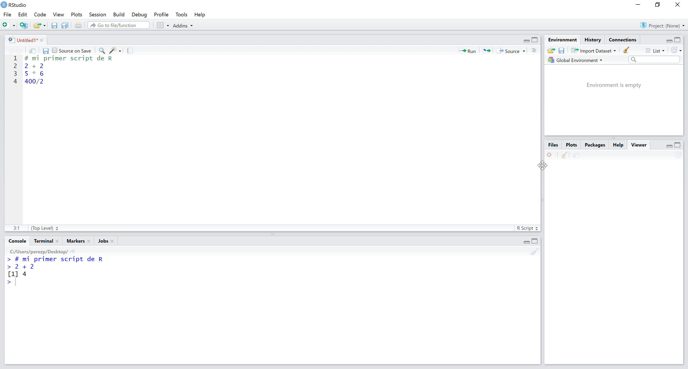
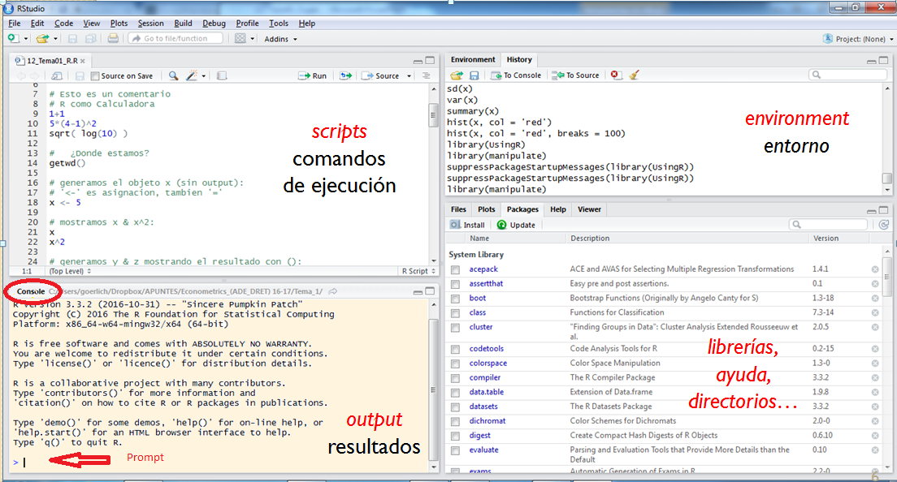

R, RStudio y forma de trabajar (WIP)
Pedro J. Pérez
2020-04-06
El objetivo de esta sección es proporcionar una breve primera introducción a R y RStudio para personas que no han tenido contacto previo con estos programas y explicitar la forma que tendremos de interactuar con ellos; es decir, la forma de trabajar con ellos (workflow).
El curso es una introducción a la Ciencia de Datos: haremos diversos análisis con datos y para ello utilizaremos R. R será el programa que hará los cálculos, gráficos, informes, pero interactuaremos con R, le daremos las ordenes a R, a través de otro programa: RStudio. Así que tendremos que instalar los 2 programas. Por ello, en el repo del curso tienes un fichero donde se explica como hacerlo.
Se puede trabajar con R/RStudio de varias formas. Nosotros trabajaremos, casi siempre, con Rprojects. Enseguida diremos qué son los Rprojects, pero de momento podemos pensar que son carpetas donde se almacenan los ficheros necesarios para hacer un análisis de datos.
Dentro de esas carpetas o Rprojects tendremos distintos tipos de ficheros, ficheros de datos, imágenes etc… y unos ficheros, llamados habitualmente scripts que contendrán las instrucciones que queramos que sean ejecutadas por R/RStudio. Bien, pues esos scripts o ficheros de ordenes pueden ser de varios tipos. Durante el curso utilizaremos 2 tipos de ficheros para darle las ordenes a R:
ficheros .R, yficheros Rmarkdownoficheros .Rmd.
Lo normal es que nunca hayas oído hablar de todo esto, así que al principio te sonará complicado, pero en nada te parecerá lo más natural del mundo. Bird by bird!!!
1. R
Ya hemos hablado de R, pero …
¿Qué es R?
Ya lo habéis visto mientras hacíamos algún ejemplo, pero para los nuevos: R es un lenguaje de programación y un entorno para el análisis estadístico y gráfico. Se puede utilizar para muchas cosas, es un lenguaje de programación, pero principalmente se utiliza en el campo de la estadística y la ciencia de datos; de hecho, R fue inicialmente creado en 1993 por dos estadísticos de la Universidad de Auckland: R. Ihaka y R.Gentleman. A partir de 1997 el desarrollo del código fuente de R (o base-R) es gestionado por un grupo de programadores conocido como “The R-core team”; pero actualmente, el entorno o ecosistema R es el resultado de la colaboración de toda una comunidad de usuarios que extiende las utilidades de base-R mediante la creación de nuevos paquetes y funciones.
R forma parte del sistema GNU y se distribuye bajo la licencia GNU GPL por lo que los usuarios tenemos la libertad de usar, estudiar, compartir (copiar) y modificar el software; es decir, R es software libre. Además de software libre, R es gratuito y multiplataforma: está disponible para Windows, Macintosh y GNU/Linux.
La página web oficial de R se llama: The R Project for Statistical Computing. Allí podrás encontrar toda la información y documentación oficial acerca de R. Aunque si alguna vez la necesitas, se puede consultar desde R con la función help.start() o, en un formato visualmente más agradable, en este repositorio de Collin Fay un destacado miembro de la actual comunidad R. Si quieres ver las personas que forman parte del R core-team o que han contribuido al desarrollo de R no tienes mas que teclear en R contributors().
R proporciona un amplio abanico de herramientas estadísticas y gráficas (modelos lineales y no lineales, tests estadísticos, análisis de series temporales, algoritmos de clasificación y agrupamiento, etc.). Como R también es un lenguaje de programación, permite que los usuarios lo extiendan definiendo sus propias funciones y paquetes. De hecho, actualmente R se ha convertido de un proyecto colaborativo y abierto en el que sus usuarios pueden publicar paquetes que extienden su configuración básica. Para darte una idea de lo prolífica y colaborativa que es la comunidad R puedes visitar estos 2 proyectos: R-bloggers y R-Weekly. Precisamente estos 2 aspectos (abundancia de paquetes y comunidad de usuarios) son claves en el éxito de R
Ya hemos dicho que R (junto con sus paquetes) puede implementar una gran variedad de técnicas estadísticas y gráficas. Existe un repositorio oficial de paquetes: Comprehensive R Archive Network o CRAN. CRAN alcanzó los 10.000 paquetes en enero de 2017, y actualmente, julio de 2019, tiene 14.553 paquetes. Además, existen muchos más paquetes en repositorios como Bioconductor, Github y otros.
Recientemente, R cumplió 20 añazos ya:
Today is the 20th anniversary of the release of R 1.0.0. pic.twitter.com/gwItCBGYV4
— The R Foundation (@_R_Foundation) February 29, 2020
Instalación de R
Obviamente, para usar R y sus paquetes tenemos que instalarlo primero. Para ello “solo” tienes que ir a CRAN y descargar la distribución de R adecuada para tu sistema operativo. Obviamente mejor la última versión. En el momento de escribir estas notas la última versión es R-3.6.1 llamada “Action of the Toes” released on 2019/07/05. Yo aún estoy usando la 3.5.3, tendré que cambiar.
No te va a a hacer falta pero por si acaso, aquí tienes un vídeo de 1:30 donde se explica de manera sencilla como instalar R, y aquí tienes una explicación muy detallada del proceso de instalación.
Como recomiendan aquí el primer día de clase usaremos R a través de la plataforma RStudio Cloud. Demoraremos los potenciales problemas que puedan surgir en la instalación de R al segundo o tercer día de clase
2. RStudio
¿Qué es RStudio?
Pues es un programa que utilizaremos para interactuar con R. Las instrucciones que queramos dar a R para que las ejecute se las daremos a través de RStudio. La razón es que la interfaz de usuario (GUI, Graphical User Interface) de R no es muy amigable ni versátil, así que interactuaremos con R a través de RStudio.
RStudio es un programa que nos permitirá interactuar con R de forma más amigable, además de facilitar muchas de las tareas de programación y análisis de datos en R; es decir, RStudio es una GUI (Graphical User Interface). En realidad, RStudio es más que una GUI, es una IDE, un entorno de desarrollo integrado para R, en inglés ‘integrated development environment’ o IDE.
El actual científico jefe de RStudio es Hadley Wickham. Wickham es uno de los más prolíficos desarrollador de paquetes para R y creador de un nuevo estilo de programar y analizar datos en R conocido como ‘tidyverse’. Muchos de los packages que utilizaremos en el curso han sido desarrollados por él y el equipo de RStudio.
Instalación de RStudio
La versión de escritorio de RStudio también es libre y gratuita. Se puede descargar aquí. Tienes que descargarte el ‘installer’ adecuado para tu sistema operativo.
Se puede trabajar perfectamente con las opciones por defecto de RStudio, pero os recomiendo cambiar algunas opciones, así que vamos a configurar RStudio.
Configurando RStudio
Está sección no es obligatoria, solo que es recomendable configurar las opciones de RStudio. ¿Cómo? En RStudio, sigue está ruta de menús: Tools > Global OPtions...
Se abrirá una ventana (que puedes ver abajo) con las opciones de configuración de RStudio. De momento vamos sólo a tocar la categoría que ves en la imagen; es decir, R General. Tienes que hacer dos cosas:
desmarcar todas las casillas (quitarles los ticks) excepto la última
Es importante, poner
Neveren la casilla donde pone “Save workspace to .RData on exit”.
Al final, en mi ordenador, la ventana con las opciones de R General queda como:
En tu ordenador debe quedar todo igual excepto las dos primeras cajas de texto:
la primera caja que le dice a RStudio que versión de R ha de usar y donde está en tu ordenador. En mi caso, cuando estaba escribiendo estas notas, estaba usando la versión 3.5.3 de 64 bites de R, por eso en mi caja pone “[64-bit] C:Files-3.5.3” que es la ruta donde tengo yo R en mi ordenador. Esta caja de texto no la has de cambiar, déjala tal y como la encuentres
la segunda caja le dice a RStudio donde se guardarán los archivos que vayamos generando; es decir, indica el directorio de trabajo por defecto. Como yo habitualmente trabajo en el escritorio de mi PC, en la imagen de abajo pone “C:/Users/perezp/Desktop”. Te recomiendo trabajar sobre el escritorio o Desktop, pero puedes seleccionar la carpeta que quieras, la carpeta en la que más cómoda trabajes.
Ya explicaré en clase porqué seleccionamos estas opciones en RStudio.
Aún más configuración de RStudio
- En RStudio sigue está ruta de menús:
Tools > Global OPtions...y seleccionaCode. Intenta dejar la opciones de la pestañaEditingcomo ves en la imagen de abajo. Concretamente lo que más me interesa es que esté marcada la opciónInsert spaces for tab
- En RStudio sigue está ruta de menús:
Tools > Global OPtions...y seleccionaCode. Intenta dejar la opciones de la pestañaEditingy después enSaving. Intenta dejarlo tal y como lo ves en la imagen de bajo. Lo más importante es que en la caja de textoDefault text encodingponga:UTF-8
Conociendo la interfaz de RStudio
Bien, durante el curso vamos a utilizar R para hacer análisis estadísticos pero lo vamos a hacer a través de RStudio, así que el primer paso es familiarizarnos un poco con la interfaz de RStudio. Para acostumbrase a R y RStudio lo mejor es la práctica, pero aquí tenéis un fantástico libro para habituarse a trabajar con R y RStudio.
Al abrir RStudio verás que al principio tiene 3 paneles, aunque enseguida abriremos un cuarto panel. La consola es el panel de la izquierda. Cuando tengamos 4 paneles la consola será el panel situado izquierda-abajo. Podemos pensar que la consola es lo más parecido a R, ya que en la consola se pueden ejecutar instrucciones de R directamente.
Cuando abras RStudio veras lo siguiente:
Consola (izquierda)
Environment/History (arriba-derecha)
Files/Plots/Packages/Help (abajo-derecha)
Ya sabemos que el panel de la izquierda es la consola. En la consola se ve un mensaje de bienvenida que nos dice que versión de R estamos usando y alguna cosa más. Al final del texto aparece el símbolo >. A este símbolo se le conoce como prompt y simplemente nos indica que el intérprete de R, que R, está listo para ejecutar nuestras instrucciones.
¿Cómo le damos las instrucciones u ordenes a R? La forma más inmediata es escribiendo las ordenes en la consola, después del prompt (>). Por ejemplo, si escribimos en la consola 2+2 y presionamos Enter, R ejecutará la instrucción y nos devolverá el resultado.
A veces usaremos la consola para ejecutar alguna instrucción, pero en general ejecutaremos las instrucciones a través de un “script”. Una razón para no usar la consola es que trabajar en la consola es muy limitado ya que las instrucciones se han de introducir una a una. Otra razón es que queremos tener un registro con todas las instrucciones que ejecutemos para poder replicar nuestro análisis en otro momento; así que lo habitual es trabajar con scripts o ficheros de instrucciones.
Un script no es más que un fichero de texto con extensión .R en el que escribiremos las instrucciones que queramos que R ejecute.
Vamos a crear nuestro primer script. Para ello tienes que seguir esta ruta de menús en RStudio: File > New File > R Script. Visualmente:
Cuando pinches con el ratón en R Script se abrirá en RStudio un nuevo panel, el cuarto, arriba a la izquierda. Visualmente:
Este cuarto panel (arriba-izquierda) en realidad es un editor de texto. En él podemos escribir las instrucciones que queramos que ejecute R. Por ejemplo, fíjate en la siguiente imagen lo que he escrito en el panel arriba-izquierda:
He escrito estas cuatro lineas:
# mi primer script de R
2 + 2
5 * 6
400/2Escribe tú también (o copia y pega) estás cuatro lineas de texto en el editor (arriba-izquierda) de tu Rstudio.
R ejecutará, cuando se lo indiquemos, las lineas de instrucciones una a una.
Una vez hayas escrito o pegado esas 4 lineas en RStudio, verás que la primera linea es diferente: lo más evidente es que está en color verde, pero en realidad lo importante es que comienza con el símbolo #. Este hecho, está marcando/diciendo a R que esa linea es un comentario para los humanos, para nosotros, no es código R y por tanto R no la ejecutará.
En un script sólo se pueden escribir 2 cosas:
comentarios (si la linea comienza con
#). R no las ejecutaráinstrucciones R (no comienzan con
#). R las ejecutará si están escritas en R; es decir, si siguen las reglas del lenguaje R. Si están mal escritas R nos devolverá un mensaje de error. Tenemos que aprender R ya!!!
Hemos escrito cuatro lineas en nuestro script y ahora queremos que R las ejecute. R ejecutará, cuando se lo indiquemos, las lineas de instrucciones una a una.
Para ejecutar una linea, situamos el cursor en ella y pulsamos Crtl + Enter.
Please, sitúa el cursor en la primera linea y pulsa Crtl + Enter. Observa qué ha ocurrido. Le hemos dicho a R que ejecute la primera linea, pero como esta primera linea comienza con #, R la ha interpretado (correctamente) como un comentario y, por supuesto, no la ha ejecutado, por lo que ha pasado a la segunda linea, y esta vez sí que la ejecuta. Como la segunda linea no comienza con #, R la interpreta como una instrucción de R y, sí la entiende (si las has escrito correctamente siguiendo la sintaxis o lenguaje de R), ejecutará la instrucción. R entiende que significa 2 + 2, así que ejecuta la instrucción y nos devuelve el resultado en la consola.
En la imagen de abajo yo ya he ejecutado la instrucción 2 + 2. R nos muestra el resultado en la consola: primero nos muestra, en azul, la instrucción que ha ejecutado; es decir > 2 + 2 y luego nos nos muestra, en negro, el resultado de la ejecución de la instrucción; es decir [1] 4. Ya veremos que significa el [1] de la linea de resultados.

Es más fácil hacerlo que contarlo, aunque puede que te atasques en alguna cosa, normal!!. Por ejemplo, si en lugar de poner el cursor en la segunda linea, señalas o subrayas solo parte de la linea, entonces, seguramente R no te entenderá. Ahora te toca a ti: please, ejecuta la tercera linea de tu script.
¿Cómo le decimos a R que ejecute la tercera linea 5 * 6? Cuando lo hacíamos en la consola simplemente había que pulsar Enter, pero ahora estamos trabajando en un script: hay que situar el cursor en la linea que queremos ejecutar y darle a Crtl + Enter. R ejecutará la instrucción y nos devolverá el resultado en la consola.
Enseguida aprenderemos más instrucciones o funciones de R, ahora solo estamos intentando familiarizándonos con el interface de RStudio. Ya sabemos como crear un fichero con instrucciones de R (ó script) y como ejecutar esas instrucciones.
Lo normal es que guardes tus scripts en un archivo por si tuvieses que volver a correr las mismas instrucciones más adelante. Para guardar tus instrucciones en un fichero sólo tienes que seguir esta ruta de menús en RStudio: File > Save as ...
Tendrás que elegir un nombre para tu script y decidir en que carpeta de tu ordenador guardarlo. Si decides que tu script se llame my_script_01, se creará un fichero (donde tú hayas decidido) llamado my_script_01.R. Fíjate que la extensión del archivo es .R, está extensión identifica los scripts o ficheros con instrucciones de R.
Bien, ya sabemos hacer que R ejecute nuestras instrucciones en la Consola (con Enter) o en un script (Crtl + Enter). Muchas veces trabajaremos con scripts o ficheros .R pero poco a poco acabaremos trabajando de otra forma.
Como queremos que nuestros análisis sean reproducibles, habitualmente trabajaremos con Rprojects y con ficheros .Rmd. Sí!!, en lugar de con ficheros .R (o scripts) trabajaremos con ficheros **Rmarkdown ó ficheros .Rmd. Ya lo veremos, pero antes tendremos que familiarizarnos un poco más con el lenguaje R. De momento seguimos con el interfaz de RStudio.
Los 4 paneles de RStudio
Vamos a mirar con un poco más de detalle los 4 paneles de RStudio. Como puedes ver en la imagen de abajo, generalmente, a la izquierda encontramos la consola y el editor de scripts. Ya sabemos que desde estos dos paneles podemos dar instrucciones a R para que las ejecute.
Veamos un poco los 2 paneles de la derecha. Podemos pensar que son paneles auxiliares, nos ayudarán en determinadas tareas. Estos dos paneles de la derecha tienen varias pestañas. Por ejemplo, el panel que está en la posición arriba-derecha tiene dos pestañas: Environment e History. En seguida veremos que al interactuar con R iremos creando objetos (por ejemplo un vector o una matriz o una tabla de datos). Estos objetos estarán guardados en la memoria del ordenador pero los “veremos”, aparecerán en la pestaña Environment. En la pestaña History tendremos un listado con las instrucciones de R que hayamos ejecutado previamente en nuestra actual sesión de R (por ejemplo 2 + 2). Otro ejemplo: a veces en nuestro análisis con R haremos un gráfico o varios, podremos ver el gráfico en la pestaña Plots en el panel situado abajo-derecha.

3. Forma de trabajar con R y RStudio
Ya hemos dejado claro que vamos a usar RStudio para interactuar con R. Ok, pero hay distintas formas de trabajar, o distintos “workflows”.
En cuanto el curso empiece a rodar, generalmente trabajaremos con casos, cada caso será un análisis independiente, así que para cada análisis construiremos y trabajaremos con un Rproject.
¿Por qué? Las razones son varias, pero como casi siempre quien mejor lo explica es Jenny Bryan, por ejemplo aquí.
Voy a intentar resumir yo lo que nos aconseja Jenny:
poner todos los archivos (datos, scripts, imágenes, etc…) necesarios para un análisis en una única carpeta dedicada en exclusiva a ese análisis o proyecto.
en esa carpeta del proyecto puedes poner subcarpetas, por ejemplo una carpeta para datos, otra para imágenes, etc…
los nombres de los archivos y las carpetas también son importantes. Hay que intentar que los nombres de los archivos sean explicativos de lo que hace o contiene el archivo. Los nombres de los ficheros han de ser legibles por las personas, pero también por las máquinas. Jenny lo explica aquí. Por favor, no dejéis espacios en blanco en los nombres de los ficheros, si queréis separar palabras usad
-y/o_. No uséis espacios en blanco!!!el directorio de trabajo del proyecto ha de ser la propia carpeta del proyecto, así todas las rutas o paths serán relativas y funcionarán en cualquier ordenador (esto lo conseguiremos trabajando con Rprojects y con el paquete
here).
Trato de explicarlo un poco más: cuando trabajemos en un proyecto, generalmente, tendremos que cargar unos datos. Por ejemplo, imagina que los datos que vas a usar están en el fichero “mis_datos.xlsx”, así que tendrás que decirle a R donde están los datos. Tendrás que darle la ruta o path hasta el archivo de datos. Normal!!
Pero como vamos a trabajar con proyectos, los datos estarán dentro de la carpeta de mi proyecto, quizás en una subcarpeta llamada “datos”. Es posible que la ruta real o global a mis datos sea la siguiente: C:/Users/perezp/my_proyecto/datos/mis_datos.xlsx, pero como trabajamos con proyectos, nuestro directorio de trabajo es la propia carpeta del proyecto, así que solo tendremos que usar una ruta relativa, solo tendremos que poner ./datos/mis_datos.xls.
La ventaja de esto no es solamente que ahorramos tiempo escribiendo los nombres de las rutas, que también, la principal ventaja consiste en que, si por ejemplo, queremos compartir nuestro análisis con un colaborador, le daremos nuestra carpeta con todo el proyecto y los scripts seguirán funcionando en SU ordenador independientemente de donde ponga él la carpeta del proyecto que le hemos dejado.
La razón obviamente es que en nuestro proyecto hemos usado rutas relativas. Las rutas relativas toman como referencia, empiezan desde el directorio de trabajo, y en un Rproject la carpeta de trabajo es siempre la propia carpeta del proyecto.
Para alguno de vosotros esto os parecerá complicado, pero ya veréis, en clase, que una vez lo entiendes, es muy-muy sencillo. Os habituareis enseguida a usar proyectos y rutas relativas.
Como dice Jenny:
These habits guarantee that the project can be moved around on your computer or onto other computers and will still “just work”.
Para acabar esta sección, no puedo resistirme a citar otra vez a Jennyfer Bryan:
File organization and naming are powerful weapons against chaos by @JennyBryan #Mozfest #MozCookie #FortuneCookie pic.twitter.com/W08ugLLrSa
‚Äî David Guarch üññ üéóÔ∏è (@DGuarch) November 7, 2015
Creando un Rproject
Bien, ya nos has dicho que trabajaremos con Rproject, vale, pero ¿cómo se crea un Rproject?
Simplemente has de abrir RStudio y seguir está ruta de menús: File > New Project... y se abrirá una ventana donde tendrás que seleccionar New Project. Entonces, se abrirá otra ventana y tendrás que seleccionar New Directory. Se abrirá otra ventana con dos cajas de texto, una, la de abajo, estará escrita la ruta donde se va a crear nuestra carpeta o proyecto y la caja de arriba estará vacía y has de poner allí el nombre que quieres que tenga tu proyecto. Como puedes ver en las imágenes de abajo, yo he llamado al proyecto “my_primer_project”.

Una vez hagas todo esto, RStudio creará una carpeta nueva en tu ordenador que será nuestra carpeta para el proyecto. En mi caso la carpeta estará en “C:/Users/perezp/Desktop/my_primer_proyecto”. Es una carpeta normal con un archivo dentro con un icono azulito y que tendrá por nombre “my_primer_proyecto.Rproj”; es un fichero de texto con extensión .Rproj. Ya hablaremos de él. Además de crear una carpeta en nuestro ordenador, RStudio habrá iniciado una nueva sesión de R con nuestro proyecto y verás algo como esto:
Sencillamente tenemos R y RStudio listos para trabajar; es decir, para ejecutar instrucciones en la consola o para crear nuestros scripts. Eso sí, los scripts que creemos ahora, se crearán directamente en la carpeta del proyecto. Ya parlarem mès de cómo interactuar con los Rprojects en clase.
Podemos pensar que un Rproject no es más que una carpeta en nuestro ordenador. De hecho puedes buscar la carpeta de tu proyecto en tu ordenador y manipularla como haces con cualquier carpeta de tu ordenador; es decir, puedes abrirla, moverla, cambiarle el nombre, crear subcarpetas, crear archivos, borrar archivos o borrar toda la carpeta. Insisto, para tu sistema operativo es una carpeta como cualquier otra. De momento esa carpeta solo contiene un archivo de texto con extensión .Rproj, poco a poco la iremos llenando con los archivos de nuestro proyecto (datos, scripts, etc …)
La carpeta del proyecto es una carpeta normal para tu sistema operativo, pero no es una carpeta normal para RStudio. Si vas a la carpeta de tu proyecto y pinchas en el archivo “my_primer_proyecto.Proj” se abrirá RStudio y RStudio reconocerá esa carpeta como un proyecto; es decir, entre otras cosas fijará el directorio de trabajo a la propia carpeta del proyecto y podremos usar rutas relativas.
Acuérdate siempre de lanzar un proyecto pinchando en el archivo con extensión “.Rproj” !!!! Hay otras formas de lanzar el proyecto pero de momento usaremos esta.
¿Por qué usamos Rprojects?
Gestionar tus análisis utilizando Rprojects tiene ventajas:
puedes gestionar varios proyectos a la vez, cada uno con su espacio de trabajo (ó environment), pero sobre todo,
facilita el compartir tus análisis; es decir, favorece la investigación reproducible.
Podemos pensar que un Rproject es una carpeta, pero es más que eso: cada Rproject tiene su propio directorio de trabajo, espacio de trabajo (environment), historial de instrucciones; además, permite crear una estructura de carpetas donde guardar los documentos asociados al proyecto en carpetas separadas (p.ej: una carpeta para datos, otra para imágenes, …).
Cuando abres un Rproject en RStudio (pinchando en el fichero .Rproj) ocurre lo siguiente:
Comienza un nuevo proceso de R (esto también es importante para la investigación reproducible)
El directorio de trabajo se fija a la carpeta que contiene el Rproject, con lo que podemos usar rutas relativas (relativas a la carpeta del proyecto)
Cuidado con los paths!!
Un gran inconveniente para conseguir informes (plenamente) reproducibles son los paths o rutas de ficheros. Si un programa necesita llamar a un fichero de datos (por ejemplo para cargar unos datos), tendrás que especificar la ruta y si alguien quiere ejecutar tus scripts en su ordenador deberá cambiar la ruta.
Trabajar con Rprojects permite solventar este problema, ya que el directorio de trabajo del Rproject coincide con la carpeta donde está alojado el Rproject y esto permite (ya lo veremos en el próximo tutorial) trabajar con rutas (o paths) relativas en lugar de absolutas. (!!)
En palabras de Jenny Bryan una de mis heRoínas y destacada miembro de la comunidad R, si empiezas tus scripts con
setwd(), significa que estás usando rutas absolutas, puedes hacerlo, pero Jenny nos aconseja que … PLEASE STOP DOING THAT !! Ademas Jenny nos lo explica:This makes your script very fragile, hard-wired to exactly one time and place. As soon as you rename or move directories, it breaks. Or maybe you get a new computer? Or maybe someone else needs to run your code?
Para Jenny la solución es usar el pkg
here, y tiene raz√≥n, pero nosotros (de momento) s√≥lo usaremos Rprojects (suficiente!!). ü§î . Bueno no, eso era en el curso para profesores, a vosotros s√≠ que os veo capacitados para aprender como usarhere::here(). üòà ü§£ . Lo veremos. El que tenga curiosidad puede leer en este post porque, a pesar de trabajar con Rprojects, tiene ventajas especificar las rutas con el paquetehere.
4. RMarkdown (archivos .Rmd)
Sí, ya sabemos que trabajaremos con Rprojects. OK, pero también dije que muchas veces en lugar de dar las instrucciones a R por medio de scripts o ficheros .R, trabajaríamos con ficheros Rmarkdown. Estos ficheros Rmarkdown tienen extensión .Rmd.
Los documentos RMarkdown son ficheros con extensión
.Rmd.Si acabas utilizando R para hacer análisis estadísticos, los ficheros
.Rmdte permitirán escribir muy-muy fácilmente informes, tutoriales y transparencias para presentaciones.Estos ficheros .Rmd son (plenamente) reproducibles.
Lo veremos, pero en esos ficheros .Rmd se mezclan trozos de texto escritos en Markdown (narratives) y trozos con código R (chunks) para hacer análisis estadísticos.
Estos ficheros se procesan con un paquete de R llamado
knitrdesarrollado por Yihui Xie … y salen unos informes o transparencias fantásticas … en una gran variedad de formatos.Con RStudio es muy fácil: solo hay que usar los menús desplegables de RStudio para crear un documento Rmarkdown, escribir lo que quieres contar y darle al botón Knitr y
knitrtejerá el documento y lo transformará a …. pdf, word, html …
Tardaremos unas 3-4 clases en explicar en detalle qué son y para que sirven los ficheros Rmarkdown, pero vamos ya a crear uno. Para ello tienes que seguir en RStudio esta ruta de menús: File > New File > R Markdown.... Visualmente:
Se abrirá una ventana. De momento no cambies nada, sólo pincha en OK.
Verás que se ha abierto una pestaña en el editor de RStudio (arriba-izquierda), con lo que parece que son muchas lineas de código R. Sí, ha creado para nosotros un archivo .Rmd y ha puesto unas lineas de código que nos sirven como ejemplo de cómo se escribe en Rmarkdown. Ya lo veremos. Visualmente:
Estos ficheros .Rmd se ejecutan de otra forma. Tienes que pinchar en el icono que pone Knit. Visualmente:

Aparecerá una ventana pidiéndote que le pongas un nombre al fichero .Rmd. Como puedes ver abajo yo le puse el nombre “para_borrar”, pero puedes poner el nombre que quieras.
Una vez le hayas puesto nombre. R ejecutará todas las instrucciones que hay en el fichero .Rmd y generará un nuevo documento que podrás ver en el panel de abajo-derecha. Además si pinchas en el icono que aparece marcado con una mano( panel abajo-derecha) en la imagen de abajo podrás verlo en tu navegador. Visualmente:
Durante el curso vamos a trabajar mucho con ficheros .Rmd, así que tendremos que explicarlos/entenderlos bien. Pero será otro día/lesson. Si os apetece podéis ver este video donde se explica las ventajas de trabajar en con ficheros Rmarkdow. Igual mañana lo pregunto.
Para finalizar un consejo: PATIENCE!!! cuesta un poco aprender/empezar con R, pero la mayoría de los errores son “tontos”.
Troubleshooting lessons I guess I'll just relearn forever:
— Allison Horst (@allison_horst) January 4, 2020
- take a break
- it's almost certainly not a bug
- extra eyes are awesome
- spelling pic.twitter.com/J17S8I6b3W